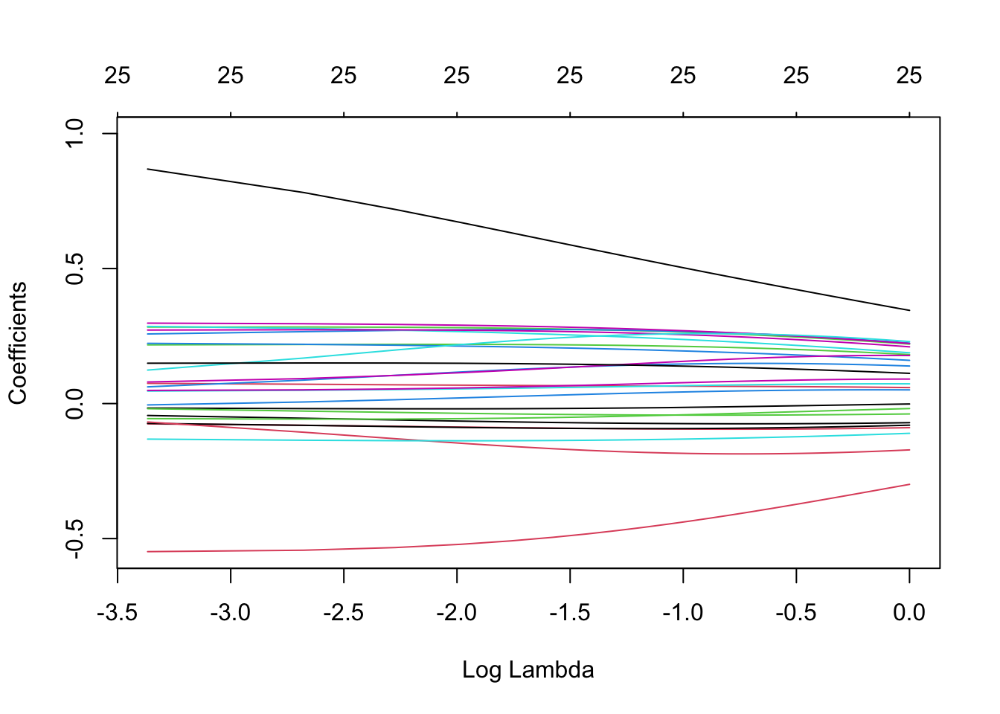

data <- read.csv("high_dimension_regularization_data/table_cian_mos_ecm.csv")7 Регуляризация и большая размерность
7.1 Что такое регуляризация?
Зачем нужна регуляризация?
- очень много ковариат, которые нужно как-то отобрать, а другие способы не подходят
- проблема мультиколинеарности
- снижение размерности
- переобучение
- фильтры
- информационные критерии Акаике и Шварца
Предположим, что мы находимся в ситуации мультиколинеарности.
- Строгая мультиколинеарность создает проблему неедиснтвенности МНК-оценок.
- При нестрогой мультиколинеарности оценки все еще являются несмещенными и асимптотически нормальными, однако стандартные ошибки в такой модели будут больше. Это приводит к широким доверительным интервалам и незначимым оценкам.
Тогда у нас есть 2 варианта, как с ней бороться. Первый – выбросить часть регрессоров, снизив дисперсию оценок и пожертвовав несмещенностью. Второй – использовать регуляризацию (МНК со штрафной функцией) – включение штрафа в сумму наименьших квадратов. Этот способ, однако, тоже несколько смещает оценки и порождает дилему смещения и дисперсии (bias–variance tradeoff).
Исходная постановка МНК:
\[ \begin{aligned} &\min _{\hat{\beta}_j} ESS = \min _{\hat{\beta}_j} \sum_{i=1}^{n} e_i^2 = \min _{\hat{\beta}_j} \sum_{i=1}^{n} \left(y_{i}-\hat{y}_{i}\right)^{2} = \min _{\hat{\beta}_j} \sum_{i=1}^{n} \left(y_{i}-\hat{\beta}_1 - \hat{\beta_2}\cdot x_i - ...\right)^{2} \end{aligned} \]
Если построить график суммы квадратов остатков в зависимости от величины коэффициентов, то он и его линии уровня будут выглядеить следующим образом:
Регуляризация фактически является задачей Лагранжа, которую вы много раз решали. В исходную оптимизационную задачу мы добавляем дополнительное ограничение, чтобы оценки были не очень большими. Тогда \(\lambda\) является множителем Лагранжа (но в этот раз для нас более важно, что это коэффициент регуляризации).
В общем виде постановка задачи регуляризации выглядит следующим образом:
\[ \begin{aligned} &\min _{\hat{\beta}_j} ESS + \text{штраф} \end{aligned} \]
В зависимости от того, какую штрафную функцию мы используем, выделяют несколько основных видов регуляризации:
- Ридж-регрессия
- Регрессия лассо
- Метод эластичной сети
7.1.1 Ридж-регрессия (ridge)
Иногда еще называют L2 или регуляризация Тихонова (почему именно L2 можно почитать тут). В качестве функции штрафа используется сумма квадратов оценок коэффициентов:
\[ \begin{aligned} &\min _{\hat{\beta}_j} \sum_{i=1}^{n}\left(y_{i}-\hat{y}_{i}\right)^{2}+\lambda\left(\hat{\beta}_{1}^{2}+\hat{\beta}_{2}^{2}+\ldots+\hat{\beta}_{k}^{2}\right) \end{aligned} \]
\[ \begin{aligned} \begin{cases} &\sum_{i=1}^{n}\left(y_{i}-\hat{y}_{i}\right)^{2} \rightarrow \underset{\hat{\beta}_j}{\min} \\ &\hat{\beta}_{1}^{2}+\hat{\beta}_{2}^{2}+\ldots+\hat{\beta}_{k}^{2} \leq t \end{cases} \end{aligned} \] А такую задачу мы умеем решать графически!

7.1.2 LASSO регрессия
Иногда еще называют L1 или регуляризация через манхэттенское расстояние. В качестве функции штрафа используется сумма модулей оценок коэффициентов:
\[ \begin{aligned} &\min _{\hat{\beta}_j} \sum_{i=1}^{n}\left(y_{i}-\hat{y}_{i}\right)^{2}+\lambda\left(\left|\hat{\beta}_{1}\right|+\left|\hat{\beta}_{2}\right|+\ldots+\left|\hat{\beta}_{k}\right|\right) \end{aligned} \]
\[ \begin{aligned} \begin{cases} &\sum_{i=1}^{n}\left(y_{i}-\hat{y}_{i}\right)^{2} \rightarrow \underset{\hat{\beta}_j}{\min} \\ &\left|\hat{\beta}_{1}\right|+\left|\hat{\beta}_{2}\right|+\ldots+\left|\hat{\beta}_{k}\right| \leq t \end{cases} \end{aligned} \]
Как правило, LASSO чаще приводит к занулению коэффициентов, чем Ridge, это обусловлено геометрией регуляризационного ограничения:

7.1.3 Метод эластичной сети (Elastic Net)
Комбинацией LASSO и Rigge регрессий является метод эластичной сети.
\[ \min _{\hat{\beta}_j} \sum_{i=1}^{n}\left(y_{i}-\hat{y}_{i}\right)^{2}+\lambda_{1} \sum_{j=1}^{k}\left|\hat{\beta}_{j}\right|+\lambda_{2} \sum_{j=1}^{k} \hat{\beta}_{j}^{2} \]
7.2 Как выбрать коэффициент регуляризации?
Это делают с помощью кросс валидации (cross validation). Как правило, почти всегда, когда говорят о кросс-валидации, имеют в виду метод k-Fold.
7.2.1 k-Fold
- Выбираем \(m\) штук \(\lambda\), которые будем проверять;
- Фиксируем одну из \(\lambda\);
- Вся выборка разделяется на k частей (k - произвольное число, часто от 5 до 10, на картинке внизу как раз 10). В машинке эти части называют фолдами;
- Далее происходит k итераций, во время каждой из которых один фолд выступает в роли тестового множества, а объединение остальных — в роли обучающего. Модель оценивается на k−1 фолде и тестируется на оставшемся. На каждом шаге итерации на тестовом фолде считается метрика качества подгонки, например, MSE (mean squared error);
- Далее k получившихся метрик агрегируются в финальный общий показатель качества модели для зафиксированной \(\lambda\), например считается средняя MSE из k штук;
- Повторяем процедуру для всех \(m\) штук \(\lambda\);
- Выбираем \(\lambda\) с минимальным финальным общим показателем \(\overline{MSE}\).
\[ MSE_j = \frac{1}{n_j}\sum \left(y_i - \hat{m}^{(-j)}(x_i)\right)^2 \]
\[ \overline{MSE}_{\lambda_m} = \frac{1}{k}\sum_{j=1}^k MSE_j \] \[ \lambda^* = \underset{\lambda_m}{argmin}\{\overline{MSE}_{\lambda_1}, ... , \overline{MSE}_{\lambda_m}\} \]

7.2.2 Кросс-валидация временных рядов
Кросс-валидация моделей для временных рдов осложняется тем, что данные не должны пересекаться по времени: обучающие данные должны идти до тестовых. С учётом этих особенностей фолды в кросс-валидации для временных рядов располагаются вдоль временной оси так, как показано на следующей картинке:
7.3 Фильтр Ходрика-Прескота
По сути формазизация задачи выделения тренда с помощью фильтра Ходрика-Прескота является регуляризацией. Мы ищем компромисс между точностью описания временного ряда и его гладкостью (тренд предыдущего периода должен быть похож на тренд текущего):
\[ \begin{aligned} &\min_{g} \underbrace{\sum_{t=1}^{T}\left(y_{t}-g_{t}\right)^{2}}_{\text{точность описания}}+ \lambda\underbrace{\sum_{t=2}^{T-1} \left[\left(g_{t+1}-g_t\right)-(g_t-g_{t-1})\right]^2}_{\text{гладкость тренда}} \end{aligned} \] где \(y_t\) – изучаемый временной ряд, \(g_t\) – выделяемый тренд.
- если \(\lambda=0\), то \(y_t=g_t\);
- если \(\lambda=\infty\), то \(g_{t+1}=g_t=g_{t-1}\), то есть получим линейный тренд.
8 Double LASSO
Живем в ситуации unconfoundedness \(T_i \perp Y_{i1}, Y_{i0} | X_i\)
8.1 Double selection
- Выбираем набор переменных с помощью LASSO
- \(Y\sim X\), получаем \(\hat{\beta}_j^Y \neq 0\), оставляем эти иксы;
- Выбираем набор переменных с помощью LASSO
- \(T\sim X\), получаем \(\hat{\beta}_j^T \neq 0\), оставляем эти иксы;
- Финальная регрессия (иногда называют post LASSO OLS)
- \(Y \sim T + \text{отобранные на прошлых шагах } X\), получаем \(\hat{\tau}^{DL}=\hat{ATE}\)
8.2 Partialling-out
По теореме Фриша-Ву-Ловелла то же самое можно сделать с помощью другой процедуры.
- Выбираем набор переменных с помощью LASSO
- \(Y\sim X\), получаем \(\hat{\beta}_j^Y \neq 0\), оставляем эти иксы;
- Оцениваем регрессию \(Y\sim X\) только на те \(X\), которые отобрали на прошлом шаге, где \(\hat{\beta}_j^Y \neq 0\). Получаем остатки модели \(e_i^Y\);
- Выбираем набор переменных с помощью LASSO
- \(T\sim X\), получаем \(\hat{\beta}_j^T \neq 0\), оставляем эти иксы;
- Оцениваем регрессию \(T\sim X\) только на те \(X\), которые отобрали на прошлом шаге, где \(\hat{\beta}_j^T \neq 0\). Получаем остатки модели \(e_i^T\);
- Финальная регрессия остатков на остатки
- \(e_i^Y \sim e_i^T\), получаем \(\hat{\tau}^{DL}=\hat{ATE}\)
9 Пример
В качестве примера использования регуляризации мы воспользуется работой (Veterinarov, Ivanov, 2018), которые изучали цену этнической дискриминации для арендодателей на рынке жилья. Авторы пытались оценить эффект наличия в объявлении дискриминирующих по этническому признаку формулировак на стоимость аренды квартир. Оказалось, что этническая дискриминация связана со значительным снижением цены.
Импортируем данные:
Набор данных включает следующие переменные:
price– цена аренды квартиры в рублях;total_area– общая площадь квартиры в квадратных метрах;
discrim_proxy– наличие дискриминирующего текста в описании объявления;*_rajon– набор бинарных переменных, соотвествующих районам Москвы, где расположена квартира;first_floor– бинарная переменная, равная единице, если квартира расположена на первом этаже;*_rooms– набор бинарных переменных, соотвествующих количеству комнат в квартире;starii_fond– бинарная переменная, равная единице, если квартира принадлежит к старому жилому фонду;blochnii– бинарная переменная, равная единице, если квартира находится в блочном доме;derevjannii– бинарная переменная, равная единице, если квартира находится в деревянном доме;kirpichnii– бинарная переменная, равная единице, если квартира находится в кирпичном доме;monolitnii– бинарная переменная, равная единице, если квартира находится в монолитном доме;panelnii– бинарная переменная, равная единице, если квартира находится в кирпичном доме;stalinskii– бинарная переменная, равная единице, если квартира находится в сталинском доме;repair– бинарная переменная, равная единице, если в квартире сделан ремонт;four_and_over_rooms– бинарная переменная, равная единице, если в квартире четыре и более комнат.
Создадим логарифмы площади и цены:
data$log_total_area <- log(data$total_area)
data$log_price <- log(data$price)9.1 LASSO
9.1.1 Подготовка
Синтаксис функции, которую мы будем далее использовать, предполагает, что мы должны передавать ей зависимую переменную, контрольные переменные и формулу модели отдельными объектами. Поэтому нам нужно их заранее заготовить.
formula <- log_price ~ log_total_area + discrim_proxy + Mos_center +
Akimanka_rajon + Hamovniki_rajon + Tverskoj_rajon + Taganskij_rajon +
Krasnoselskij_rajon + Mesanskij_rajon + Zamoskvorece_rajon +
Basmannyj_rajon + Arbat_rajon + first_floor + one_room + two_rooms +
three_rooms + four_and_over_rooms + starii_fond + blochnii +
derevjannii + kirpichnii + monolitnii + panelnii + stalinskii + repair # формула для регресии
X <- model.matrix(data=data,formula) # матрица для оценки моделиСледующий шаг, который нам нужно выполнить, это решить, какую \(\lambda\) мы будем использовать. Мы можем захотеть проверить сразу несколько, для этого создадим вектор, в который поместим все значения \(\lambda\), которые мы хотим перебрать:
lambdas <- seq(0,1,length=30) # 10 штук от 0 до 1 с равными интервалами
lambdas [1] 0.00000000 0.03448276 0.06896552 0.10344828 0.13793103 0.17241379
[7] 0.20689655 0.24137931 0.27586207 0.31034483 0.34482759 0.37931034
[13] 0.41379310 0.44827586 0.48275862 0.51724138 0.55172414 0.58620690
[19] 0.62068966 0.65517241 0.68965517 0.72413793 0.75862069 0.79310345
[25] 0.82758621 0.86206897 0.89655172 0.93103448 0.96551724 1.000000009.1.2 Оценивание
Регуляризация в R реализована в библиотеке glmnet:
library(glmnet)model_lasso <- glmnet(x=X, # матрица иксов
y=data$log_price, # зависимая переменная
alpha = 1, # 1 лассо, 0 ридж
lambda = lambdas) # вектор лямбд9.1.3 Диагностика
В первую очередь мы можем посмотреть общую сводку по оцененным тридцати моделям:
print(model_lasso)
Call: glmnet(x = X, y = data$log_price, alpha = 1, lambda = lambdas)
Df %Dev Lambda
1 0 0.00 1.00000
2 0 0.00 0.96550
3 0 0.00 0.93100
4 0 0.00 0.89660
5 0 0.00 0.86210
6 0 0.00 0.82760
7 0 0.00 0.79310
8 0 0.00 0.75860
9 0 0.00 0.72410
10 0 0.00 0.68970
11 0 0.00 0.65520
12 0 0.00 0.62070
13 1 0.71 0.58620
14 1 7.94 0.55170
15 1 14.73 0.51720
16 1 21.09 0.48280
17 1 27.00 0.44830
18 1 32.48 0.41380
19 1 37.52 0.37930
20 1 42.12 0.34480
21 1 46.28 0.31030
22 2 50.33 0.27590
23 2 55.24 0.24140
24 2 59.50 0.20690
25 2 63.10 0.17240
26 2 66.04 0.13790
27 3 68.36 0.10340
28 4 70.63 0.06897
29 5 72.20 0.03448
30 25 73.15 0.00000Эта сводка включает в себя:
- Df – количество ненулевых коэффициентов;
- %Dev – процент объясненной дисперсии;
- Lambda – значение параметра регуляризации.
Например, мы видим, что сокращая процент объясненной дисперсии с 73% до 68% мы убираем целых 22 коэффициента!
Также мы можем получить коэффициенты модели для одной или нескольких лямбд в диапазоне задаваемой нами ранее последовательности. Первый столбец содержит оценки при \(\lambda = 1\) и соответсвует обычному МНК без регуляризации:
coef(model_lasso, s = c(0, 0.1, 0.3, 0.5, 0.7))27 x 5 sparse Matrix of class "dgCMatrix"
s1 s2 s3 s4 s5
(Intercept) 6.688934013 6.884354744 8.30906359 10.0798005 10.87369
(Intercept) . . . . .
log_total_area 1.000871639 0.956754318 0.62494599 0.1935012 .
discrim_proxy -0.067431338 . . . .
Mos_center 0.526321806 0.363336145 0.00375921 . .
Akimanka_rajon -0.003209375 . . . .
Hamovniki_rajon 0.049532158 . . . .
Tverskoj_rajon 0.053744571 . . . .
Taganskij_rajon -0.257458484 . . . .
Krasnoselskij_rajon -0.164909968 . . . .
Mesanskij_rajon -0.031110726 . . . .
Zamoskvorece_rajon -0.018498909 . . . .
Basmannyj_rajon -0.201802963 . . . .
Arbat_rajon 0.022684170 . . . .
first_floor -0.061025196 . . . .
one_room -0.026247169 . . . .
two_rooms -0.024026147 . . . .
three_rooms 0.001392248 . . . .
four_and_over_rooms 0.029859360 . . . .
starii_fond 0.066064231 . . . .
blochnii -0.026137209 . . . .
derevjannii -0.543010257 . . . .
kirpichnii -0.048384083 . . . .
monolitnii -0.019660744 . . . .
panelnii -0.122118162 -0.001149653 . . .
stalinskii 0.050088144 . . . .
repair 0.146070488 0.006971480 . . . Есть еще несколько способов взглянуть как выбор гиперпараметра влияет на коэффициенты модели. Построим несколько графиков.
9.1.3.1 Изменение коэффициентов в зависимости от размера штрафов (lambda)
Начнем с графика зависимости величины коэффициентов от логарифма лямбды:
plot(model_lasso, xvar = 'lambda', label = TRUE)2.7^(-2.3)[1] 0.10182712.7^(-1.3)[1] 0.27493312.7^(-0.5)[1] 0.6085806Видим, что при лямбде, равной 0.6, зануляются все коэффициенты модели.
9.1.3.2 Изменение коэффициентов в зависимости от величины доли объясненной дисперсии
Теперь построим график зависимости величины коэффициентов от величины объясненной дисперсии:
plot(model_lasso, xvar = 'dev', label = TRUE)Снова видим, что снижение объясненной дисперсии с 70% на несколько процентных пунктов позволяет убрать из регрессии более десятка коэффициентов.
9.1.3.3 Изменение коэффициентов в зависимости от суммарного штрафа
Последний график – зависимость величины коэффициентов от размера накладываемого штрафа.
plot(model_lasso, xvar = 'norm', label = TRUE)
Видим, что большую часть штрафа объясняют второй и четвертый коэффициенты.
9.1.4 Кросс-валидация
Как было оговорено выше, выбрать величину лямды нам помогает процедура под названием кросс-валидация. Найдем лямбду, которая минимизирует MSE:
model_cv <- cv.glmnet(X, # матрица иксов
data$log_price, # зависимая переменная
alpha=1, # 1 лассо, 0 ридж
type.measure ="mse") # метрика качестваГрафик зависимости MSE в кросс-валидации в зависимости от лямд:
plot(model_cv)Функция cv.glmnet расчитывает две лямды.
Первая лямбда минимизирует MSE:
model_cv$lambda.min[1] 0.0009607159Мы можем видеть, что эта лямбда получается очень маленькой, то есть оценки регрессии практически дублируют МНК без регуляризации. Поэтому также рассчитывается вторая лямбда (консервативная), которая закладывает чуть больший запас прочности. Она больше минимальной лямбды (которая минимизирует MSE) на одно стандартное отклонение:
model_cv$lambda.1se[1] 0.03002925Мы также можем сравнить коэффициенты в двух моделях с вышеуказанными лямбдами:
coef(model_cv, s = "lambda.min")27 x 1 sparse Matrix of class "dgCMatrix"
s1
(Intercept) 6.6370458325
(Intercept) .
log_total_area 1.0068449681
discrim_proxy -0.0657833140
Mos_center 0.5040949860
Akimanka_rajon 0.0139579052
Hamovniki_rajon 0.0648867791
Tverskoj_rajon 0.0739094983
Taganskij_rajon -0.2241082038
Krasnoselskij_rajon -0.1289100034
Mesanskij_rajon -0.0004072351
Zamoskvorece_rajon .
Basmannyj_rajon -0.1664366224
Arbat_rajon 0.0419087352
first_floor -0.0571914907
one_room -0.0001325229
two_rooms .
three_rooms 0.0215989064
four_and_over_rooms 0.0479392737
starii_fond 0.0565052634
blochnii -0.0179282802
derevjannii -0.4934208218
kirpichnii -0.0413662251
monolitnii -0.0124146216
panelnii -0.1161728511
stalinskii 0.0488024624
repair 0.1441384544coef(model_cv, s = "lambda.1se")27 x 1 sparse Matrix of class "dgCMatrix"
s1
(Intercept) 6.55019416
(Intercept) .
log_total_area 1.02704039
discrim_proxy -0.01564148
Mos_center 0.47857861
Akimanka_rajon .
Hamovniki_rajon .
Tverskoj_rajon .
Taganskij_rajon .
Krasnoselskij_rajon .
Mesanskij_rajon .
Zamoskvorece_rajon .
Basmannyj_rajon .
Arbat_rajon .
first_floor .
one_room .
two_rooms .
three_rooms .
four_and_over_rooms .
starii_fond .
blochnii .
derevjannii .
kirpichnii .
monolitnii .
panelnii -0.06304135
stalinskii .
repair 0.106035059.2 Ridge
С ридж всё аналогично, набор переменных и лямбд будем использовать те же, поэтому шаг с подготовкой можем пропустить.
9.2.1 Оценивание
model_ridge <- glmnet(x=X, # матрица иксов
y=data$log_price, # зависимая переменная
alpha = 0, # 1 лассо, 0 ридж
lambda = lambdas) # вектор лямбд9.2.2 Диагностика
print(model_ridge)
Call: glmnet(x = X, y = data$log_price, alpha = 0, lambda = lambdas)
Df %Dev Lambda
1 25 63.20 1.00000
2 25 63.55 0.96550
3 25 63.90 0.93100
4 25 64.25 0.89660
5 25 64.60 0.86210
6 25 64.95 0.82760
7 25 65.30 0.79310
8 25 65.66 0.75860
9 25 66.01 0.72410
10 25 66.36 0.68970
11 25 66.71 0.65520
12 25 67.06 0.62070
13 25 67.41 0.58620
14 25 67.76 0.55170
15 25 68.10 0.51720
16 25 68.45 0.48280
17 25 68.79 0.44830
18 25 69.14 0.41380
19 25 69.48 0.37930
20 25 69.82 0.34480
21 25 70.16 0.31030
22 25 70.50 0.27590
23 25 70.84 0.24140
24 25 71.19 0.20690
25 25 71.54 0.17240
26 25 71.90 0.13790
27 25 72.27 0.10340
28 25 72.63 0.06897
29 25 72.97 0.03448
30 25 73.15 0.00000- Df – количество ненулевых коэффициентов;
- %Dev – процент объясненной дисперсии;
- Lambda – значение параметра регуляризации.
coef(model_ridge, s = c(0, 0.1, 0.3, 0.5, 0.7))27 x 5 sparse Matrix of class "dgCMatrix"
s1 s2 s3 s4
(Intercept) 6.64622923 7.82150033 8.59638355 8.94662237
(Intercept) . . . .
log_total_area 0.99897873 0.72448212 0.53737656 0.45303267
discrim_proxy -0.06742813 -0.08381652 -0.09346609 -0.09479466
Mos_center 0.27926934 0.28275601 0.26996717 0.25443798
Akimanka_rajon 0.24401916 0.27056845 0.27099289 0.25843118
Hamovniki_rajon 0.29645525 0.27270608 0.24487862 0.22459975
Tverskoj_rajon 0.30072404 0.29333929 0.27584561 0.25871019
Taganskij_rajon -0.01039935 -0.01933351 -0.01607290 -0.01063353
Krasnoselskij_rajon 0.08210284 0.06971030 0.06511376 0.06345969
Mesanskij_rajon 0.21590629 0.21929606 0.21465652 0.20559180
Zamoskvorece_rajon 0.22849227 0.21641093 0.19970664 0.18628395
Basmannyj_rajon 0.04522337 0.05166245 0.06357240 0.06975185
Arbat_rajon 0.26975954 0.27304921 0.26068747 0.24494209
first_floor -0.06115603 -0.08482058 -0.09276298 -0.09073422
one_room 0.02345361 -0.12797503 -0.18005839 -0.18634001
two_rooms 0.02646231 -0.03230265 -0.04218364 -0.04271241
three_rooms 0.05268420 0.10293849 0.14283069 0.14877111
four_and_over_rooms 0.08163659 0.19559792 0.25532900 0.25750181
starii_fond 0.06617482 0.10309458 0.14759133 0.16771742
blochnii -0.02655046 -0.06011294 -0.07320187 -0.07488527
derevjannii -0.54356480 -0.53405633 -0.46142388 -0.39987828
kirpichnii -0.04863661 -0.05742225 -0.04577488 -0.03476132
monolitnii -0.01960235 0.01351756 0.03902709 0.04758936
panelnii -0.12243000 -0.13729045 -0.13396670 -0.12668462
stalinskii 0.04997978 0.05383198 0.07283667 0.08357672
repair 0.14621993 0.15011033 0.14200161 0.13225801
s5
(Intercept) 9.168951934
(Intercept) .
log_total_area 0.399735732
discrim_proxy -0.093328861
Mos_center 0.239758886
Akimanka_rajon 0.244137214
Hamovniki_rajon 0.208128549
Tverskoj_rajon 0.243037619
Taganskij_rajon -0.006234785
Krasnoselskij_rajon 0.061843445
Mesanskij_rajon 0.195679384
Zamoskvorece_rajon 0.174760220
Basmannyj_rajon 0.072451510
Arbat_rajon 0.229961879
first_floor -0.086664976
one_room -0.182340426
two_rooms -0.041285275
three_rooms 0.146608650
four_and_over_rooms 0.248081512
starii_fond 0.176042856
blochnii -0.073901381
derevjannii -0.352313526
kirpichnii -0.026721380
monolitnii 0.050441717
panelnii -0.119637562
stalinskii 0.088649856
repair 0.1233865509.2.2.1 Изменение коэффициентов в зависимости от размера штрафов (lambda)
plot(model_ridge, xvar = 'lambda', label = TRUE)
9.2.2.2 Изменение коэффициентов в зависимости от величины доли объясненной дисперсии
plot(model_ridge, xvar = 'dev', label = TRUE)9.2.2.3 Изменение коэффициентов в зависимости от суммарного штрафа
plot(model_ridge, xvar = 'norm', label = TRUE)9.2.3 Кросс-валидация
model_cv <- cv.glmnet(X, # матрица иксов
data$log_price, # зависимая переменная
alpha=1, # 1 лассо, 0 ридж
type.measure ="mse") # метрика качестваГрафик зависимости MSE в кросс-валидации в зависимости от лямд:
plot(model_cv)Оптимальные лямды:
model_cv$lambda.min[1] 0.0009607159model_cv$lambda.1se[1] 0.032957069.3 Double LASSO
library(hdm)9.3.1 Способ 1 (с помощью пакета)
Готовим аргументы:
formula2 <- log_price ~ log_total_area + Mos_center +
Akimanka_rajon + Hamovniki_rajon + Tverskoj_rajon + Taganskij_rajon +
Krasnoselskij_rajon + Mesanskij_rajon + Zamoskvorece_rajon +
Basmannyj_rajon + Arbat_rajon + first_floor + one_room + two_rooms +
three_rooms + four_and_over_rooms + starii_fond + blochnii +
derevjannii + kirpichnii + monolitnii + panelnii + stalinskii + repair # формула для регресии без тритмента
X <- model.matrix(data=data, formula2) # матрица для оценки модели
y <- data$log_price # зависимая переменнаяОцениваем double lasso модель:
model_DR <- rlassoEffect(X, # матрица иксов
y, # зависимая переменная
data$discrim_proxy, # тритмент
method = 'double selection') # по умолчанию 'partialling out', но можно и 'double selection'Таким образом, эффект от дискриминации равен -0.067:
summary(model_DR)[1] "Estimates and significance testing of the effect of target variables"
Estimate. Std. Error t value Pr(>|t|)
d1 -0.06736 0.00564 -11.94 <2e-16 ***
---
Signif. codes: 0 '***' 0.001 '**' 0.01 '*' 0.05 '.' 0.1 ' ' 1Можем посмотреть, какие переменные процедура выкинула, а какие оставила:
model_DR$selection.index (Intercept) log_total_area Mos_center Akimanka_rajon
FALSE TRUE TRUE FALSE
Hamovniki_rajon Tverskoj_rajon Taganskij_rajon Krasnoselskij_rajon
TRUE TRUE TRUE TRUE
Mesanskij_rajon Zamoskvorece_rajon Basmannyj_rajon Arbat_rajon
FALSE FALSE TRUE FALSE
first_floor one_room two_rooms three_rooms
TRUE FALSE FALSE FALSE
four_and_over_rooms starii_fond blochnii derevjannii
TRUE FALSE TRUE TRUE
kirpichnii monolitnii panelnii stalinskii
TRUE TRUE TRUE TRUE
repair
TRUE 9.3.2 Способ 2 (Double selection руками)
Шаг 1
step_1 <- cv.glmnet(X,
data$log_price,
alpha=1,
type.measure ="mse")Посмотрим, какие коэффициенты остались после шага 1:
coef(step_1, s="lambda.1se")26 x 1 sparse Matrix of class "dgCMatrix"
s1
(Intercept) 6.55075564
(Intercept) .
log_total_area 1.02650307
Mos_center 0.47526660
Akimanka_rajon .
Hamovniki_rajon .
Tverskoj_rajon .
Taganskij_rajon .
Krasnoselskij_rajon .
Mesanskij_rajon .
Zamoskvorece_rajon .
Basmannyj_rajon .
Arbat_rajon .
first_floor .
one_room .
two_rooms .
three_rooms .
four_and_over_rooms .
starii_fond .
blochnii .
derevjannii .
kirpichnii .
monolitnii .
panelnii -0.05993709
stalinskii .
repair 0.10267275Остались log_total_area, Mos_center, panelnii, repair
Шаг 2
step_2 <- cv.glmnet(X,
data$discrim_proxy,
alpha=1,
type.measure ="mse",
family="binomial")Посмотрим, какие коэффициенты остались после шага 2:
coef(step_2, s="lambda.1se")26 x 1 sparse Matrix of class "dgCMatrix"
s1
(Intercept) 2.58136299
(Intercept) .
log_total_area -0.99628560
Mos_center -0.59645010
Akimanka_rajon .
Hamovniki_rajon .
Tverskoj_rajon .
Taganskij_rajon .
Krasnoselskij_rajon .
Mesanskij_rajon .
Zamoskvorece_rajon .
Basmannyj_rajon .
Arbat_rajon .
first_floor .
one_room .
two_rooms 0.01441866
three_rooms .
four_and_over_rooms .
starii_fond .
blochnii .
derevjannii .
kirpichnii .
monolitnii .
panelnii 0.21044197
stalinskii .
repair -0.15377264Остались log_total_area, Mos_center, panelnii, repair
Шаг 3
step_3 <- lm(data$log_price ~ discrim_proxy + log_total_area + Mos_center + panelnii + repair,
data=data)Посмотрим оценку эффекта:
summary(step_3)
Call:
lm(formula = data$log_price ~ discrim_proxy + log_total_area +
Mos_center + panelnii + repair, data = data)
Residuals:
Min 1Q Median 3Q Max
-4.6650 -0.2068 0.0192 0.2200 1.9787
Coefficients:
Estimate Std. Error t value Pr(>|t|)
(Intercept) 6.458639 0.023902 270.22 <2e-16 ***
discrim_proxy -0.067855 0.006365 -10.66 <2e-16 ***
log_total_area 1.048082 0.005808 180.47 <2e-16 ***
Mos_center 0.521361 0.006913 75.42 <2e-16 ***
panelnii -0.100640 0.005454 -18.45 <2e-16 ***
repair 0.145571 0.004981 29.23 <2e-16 ***
---
Signif. codes: 0 '***' 0.001 '**' 0.01 '*' 0.05 '.' 0.1 ' ' 1
Residual standard error: 0.3842 on 26035 degrees of freedom
Multiple R-squared: 0.7281, Adjusted R-squared: 0.728
F-statistic: 1.394e+04 on 5 and 26035 DF, p-value: < 2.2e-16Таким образом, эффект от дискриминации равен -0.067.